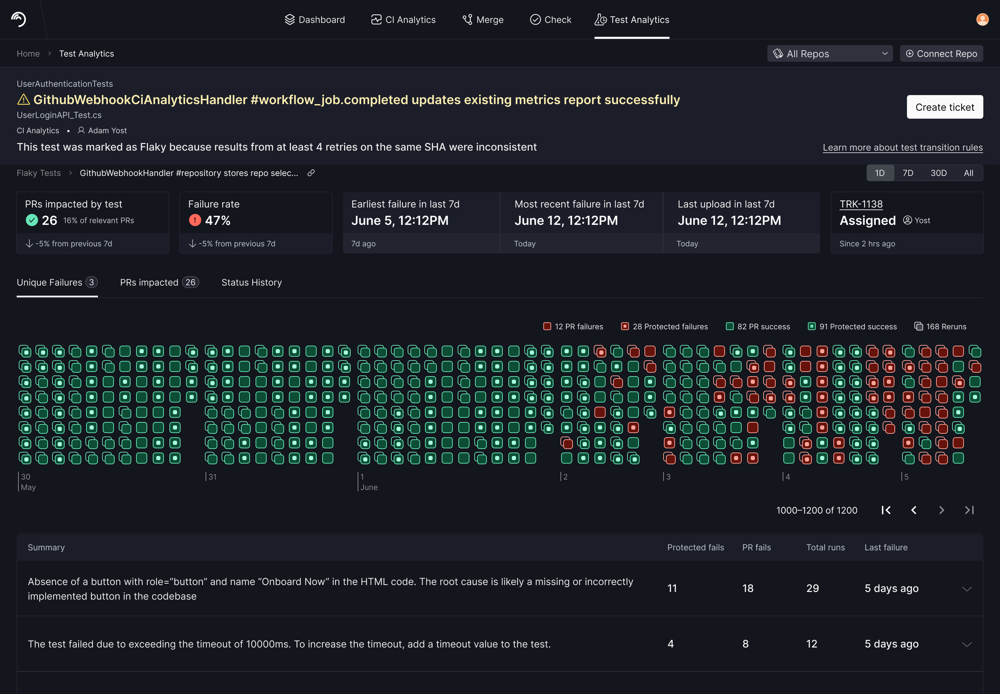

Why Flaky Tests?
Flaky tests are tests that return untrustworthy results.
-
Engineering teams rely on thousands of tests to protect
their application and their sanity.
-
Problematic tests erode engineering velocity by slowing
CI times and gating release cycles.
-
Flaky tests are a major offender, but only one of several
problematic test types this product helps with.
Who Will Use This?
-
DevEx owners will use it to understand what happened to a
test, assess the priority, and delegate the test to the team that owns it.
-
Non-owner ICs will log in and use flaky tests to unblock
PRs or investigate problematic tests owned by their team.
Previous Product
The previous iteration of the flaky test detail page was
built first by a freelancer and later taken over by me. Before this project,
I did a lot of spot work on various component flows, but this was our first
major pass at the page.

User Story & Initiatives
-
Understanding test history is important. The run node
display limited the window of time that could be shown and was difficult
to parse.
-
Test history is tied to environment. Because all run data
was mushed together, users were struggling to understand test
classification.
-
On a high level, we wanted to show when something
happened to a test, where it happened, and how to act.
Preliminary User Interviews
-
Users want to see code quickly. Log output is where
rubber hits the road.
-
Users can have both passive and active mindsets here.
DevEx owners use the test page to understand where their biggest problems
are and delegate them, but also to put out CI fires.
-
Where is this failing? Knowing where a test is failing
(PRs, nightlies, etc.) is critical to understanding what is going wrong.
-
DevEx owners heavily weigh the consequences of quarantining. They need
buy-in and corroboration to feel confident in that decision.
A sample teardown based on interviews with users and stakeholders
Sample competitive research
First Round Designs (20%)
-
Our pod began with real visualizations and dashboards based on customer
feedback and internal ideation.
-
We vetted these prototypes with customers first, then used images to build
collage-like 20% designs.
-
Early design ideation happened through daily collaborative pod sessions.
UI collages using screenshots and existing components
Many of the ideas in these designs came from collaborative pod sessions
Second Round Designs (80%)
-
After shopping our 20% designs around, including with leadership, we
decided to simplify or remove many of the large metrics.
-
The sidebar layout received the most positive feedback, so we decided to
explore fixed and fluid layouts around it.
-
We received feedback that the run data and log output felt very busy, so
we opted to move run node data into the history sidebar and collapse the
log output.
Fluid approach
Expandable run view as a compromise until log grouping is further along
Non-fluid variant
Final Iteration
-
I broke out the text for environment area bar to accommodate edge concerns
and help with confusion about the type of data it shows.
-
I added filtering to test history and dialed in the datapoints and ability
to view run nodes.
-
I switched the timeline area chart to a traditional bar chart to help
users understand total run scale for each bucket.
We went with the non-fluid variant to stay consistent with other views
Hover interactions

As our log grouping got better, we were able to expand the run output directly
Full run list can still be accessed via history items
Loading states
Empty states
Post Release Interviews (Ongoing)
-
Users loved the prominence of the sidebar—a feature some had never seen
before even though it was always there.
-
Users enjoyed the branch class breakdowns, but some were confused by the
labeling.
-
Users only missed the node breakdowns when trying to understand status
changes over time—a problem resolved by the addition of run details in the
timeline.
-
Many big metric cards were not missed, except for PRs impacted and CI
hourly metrics, which are helpful for justifying the test problem upward
internally.
Component Work
As development progressed, the component sets were fleshed out and global
design entries were created or expanded.
We reworked the bar chart component. The bottom one was used in another view.
Expansion of the run status icon states
Follow Up Work
-
I continued to support engineers with improvements and guidance for
loading states on the component level.
-
As our team learned more about environment edge cases, we added variants
for differing environment counts to the environment graph.
-
I improved visualization colors to factor in perception biases and color
blindness.
-
I made improvements to code owners, ticketing, and various empty states
based on user feedback (in-progress).
Loading states were expanded as a follow up
States for different branch class counts
History item states